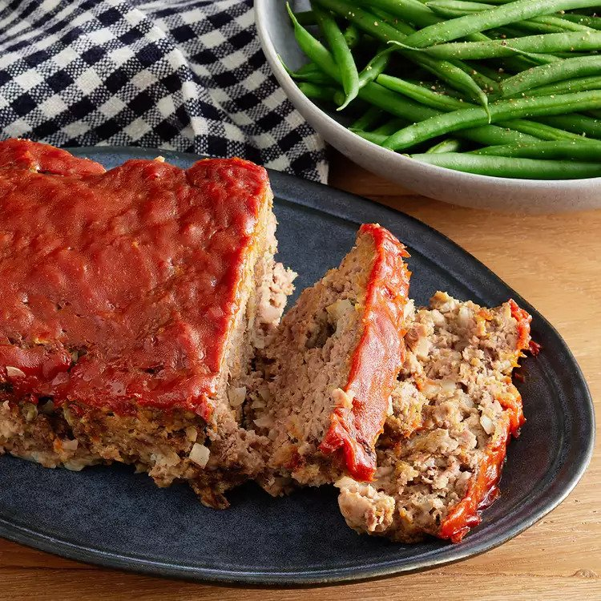

Meatloaf

Easy Meatloaf recipe is that both tasty and quick to cook
Meatloaf is a ground beed based comfort food that is baked in a loan pan.
This recipe pairs well with roasted vegetables, mashed, or baked potatoes.
There are few ingredients and the resulting dish is a loaf that gets sliced and served hot.
Ingredients
- 1.5lbs ground beef
- 1 egg
- 1 onion, chopped
- 1 cup milk
- 1 cup dried breadcrums
- salt and pepper to taste
- 1/3 cup ketchup
- 2 tbsp brown sugar
- 2 tbsp mustard
Steps
- Preheat oven to 350 degrees F.
- Lightly grease a 9x5 inch loaf pan.
- Combine and mix ground beef, onion, milk, bread crumbs, and egg in large bowl, season with salt and pepper.
- Transfer to prepared loaf pan.
- Mix ketchup, brown sugar, and mustard together and pour over meatloaf, spreading evenly over the top.
- Bake until no longer pink in the center, approximately 1 hour